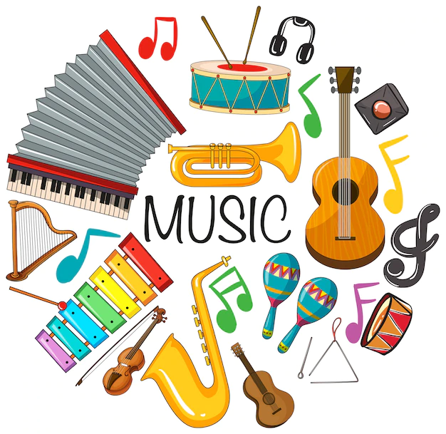
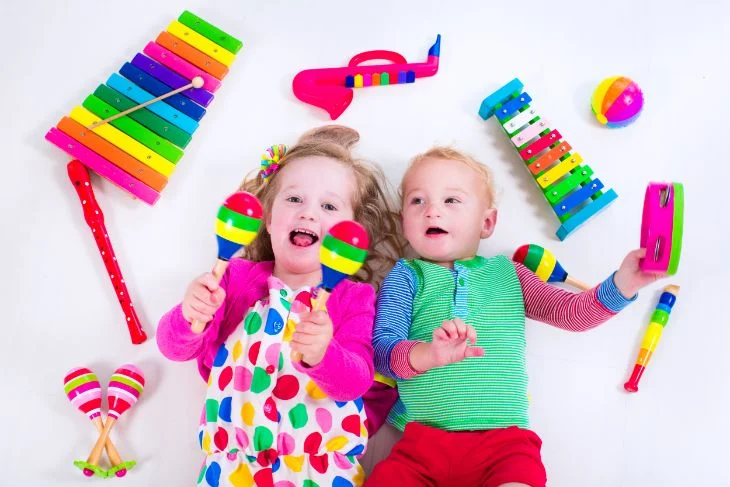
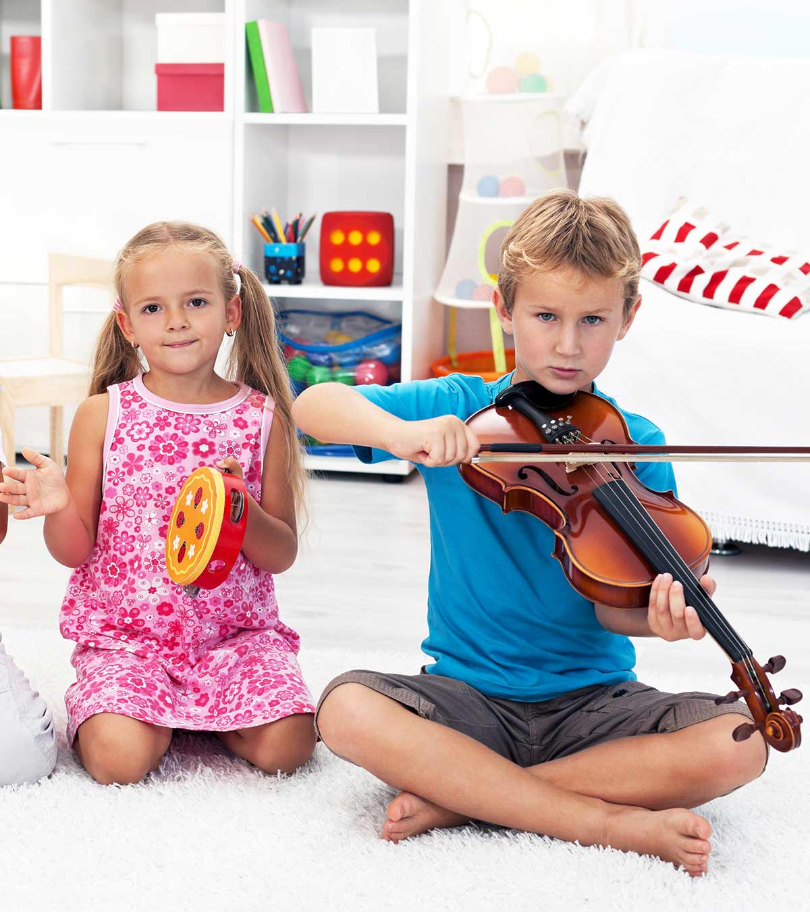
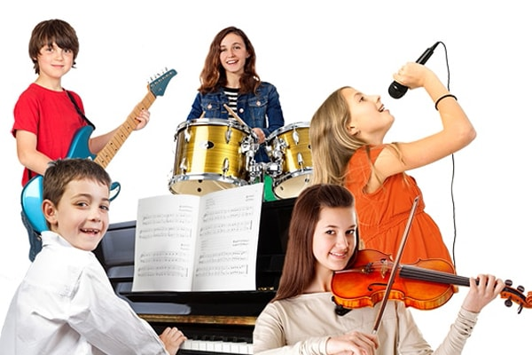
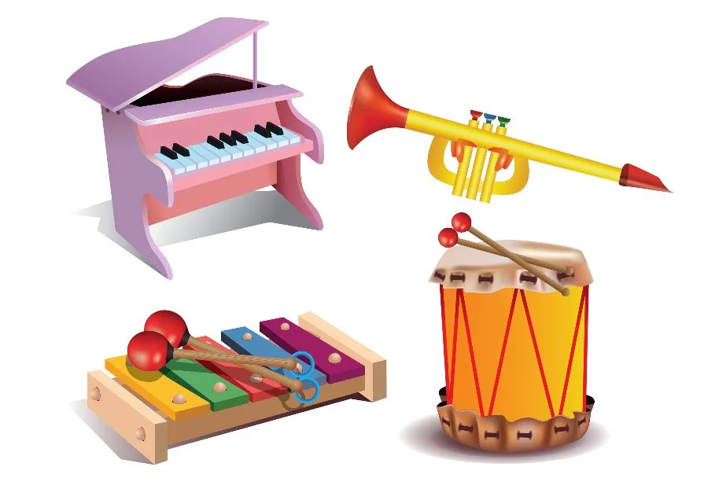

با بیش از 10 سال سابقه
مجموعه ای از بهترین مدرسین استان، بهترین هنرجویان و بهترین ...
اگرچه هر وسیلهای را که صدا بدهد میتوان ساز دانست ولی در کل منظور از ساز وسایلی است که صرفاً برای اجرای موسیقی ساخته میشود.
احتمالاً قدیمیترین وسیله تولید موسیقی صدای انسانی است. بعد از آن شاید انواع سازهای کوبهای و پس از آن سازهای بادی قدمت بیشتری دارند. یک قطعه استخوان سوراخ شده مربوط به دوره انسان نئاندرتال را قدیمیترین ساز بادی کشفشده میدانند.
سازهای زهی نیز در فرهنگهای مختلف بشری به کار میرفته و در تماسهای بین فرهنگها انواع آن متحول شده و بسیاری از اینگونه سازها در نقاط مختلف جهان دیده میشوند که در عین تفاوت جنبههای مشترک بسیاری دارند. قدیمیترین ساز زهی، سازی است ایرانی به نام تنبور.
فن تولید ساز بهویژه پس از انقلاب صنعتی در اروپا پیشرفت بسیار کرد و انواع سازهای پیچیده و زیبا با توانایی صدادهی عالی در اروپا تولید شده و میشود. در قرن بیستم ژاپن و اخیراً چین نیز سازهایی با کیفیت بسیار خوب تولید کردهاند.
همچنین پیشرفت فناوری الکترونیک عرصه وسیعی را برای سازهای الکترونیک باز کرد و به ویژه کاربرد رایانه در تولید موسیقی نمای تازهای از مفهوم ساز را در برابر موسیقیدانان گستردهاست.
بررسی و طبقهبندی و شناخت سازها را «سازشناسی» یا «ارگانولوژی» مینامند. سازها را به صورتهای مختلف دستهبندی کردهاند ولی معمولترین (و نه لزوماً دقیقترین) دستهبندی سازها تقسیم آنها به سازهای زهی، سازهای بادی، سازهای کوبهای، سازهای صفحهکلیددار، سازهای الکترونیک و صدای انسانی است.
نوازندگان مجموعه
music_note




سازسازی یا سازگری
سازسازی یا سازگری به معنای ساختن ساز و ابزار موسیقی است.[۱] سازسازی از شاخههای موسیقی و صنایعدستی بهشمار میآید.[۲] هنر سازسازی را میتوان چکیدهای از درودگری، زرگری، معرق، نوازندگی و … دانست.[۳]
تاریخچه
تقریباً در همهٔ نظریات ارائه شده در مورد چگونگی پیدایش ساز، کوبیدن به اعضای بدن و پایکوبی به عنوان نخستین امکانات مورد استفادهٔ انسان برای خلق موسیقی، معرفی شدهاست.[۴] پس از دستیابی به ابزار، انسان طریقهٔ ساخت سازهای ابتدایی را آموخت. به عنوان مثال کُنده و تنهٔ درختان را خالی کرد و آن را به عنوان ساز یا وسیلهای برای ارسال پیام از طریق ضربههای قراردادی، مورد استفاده قرار داد.[۵] در قدیمیترین گروهبندی سازها که به دو فرهنگ کهن چین و هندوستان تعلق دارد، ۸ وسیلهٔ ایجاد صدا وجود دارد که عبارتند از: پوست حیوانات، سنگ، فلز، گِل پخته (سفال)، ابریشم، چوب، نی، کدوی غلیانی.[۶]
حضور سازهای موسیقی را میتوان در آثار تاریخی، نقشها و ظروف باستانی جستجو کرد. یکی از آثار مشهورِ یافته شده در این زمینه، تصویر گروهی از نوازندگان است که بر «جام ارجان» متعلق به نیمهٔ دوم هزارهٔ اول پیش از میلاد، نقش بستهاست.[۶] بر اساس نظریههای سازشناسی «سازهای مختلف در کشورهای گوناگون جهان به دست یک سازنده ساز ساخته نشده بلکه مانند زبان و دیگر پدیدههای اجتماعی که در دنیا سنت شده، مانند غذا و لباس مردمان، همراه با نیازهای انسانها تکامل یافته و سازندگان اولیه آن فرد نبوده و طی هزاران سال تکامل یافته و هر سازی با ذائقهای ملی نقش بارز خود را تاکنون ایفا کردهاست.»[۷]
در ایران
سازهای ایرانی مانند رباب، بربط، تنبور، دف، ارغنون، چنگ، سرنای، شیپور و چغانه قدمتی سه هزارساله دارند. سازهای ساخته شده در ایران ازنظرِ چگونگی تولید صدا به سازهای زهی، بادی و کوبهای تقسیمبندی میشوند و ازنظر جنس نیز به ۳ گروه سازهای فلزی، سفالی و چوبی طبقهبندی میشوند[۶] که از آن میان چوب نقش برجستهتری داشتهاست. چوب، کُنده و تنهٔ درخت توت، بیشترین کاربرد را در ساخت سازهای ایرانی دارد.[۵] شاخ حیواناتی مانند قوچ، پوست بره، صدف دریاهای شمال و جنوب و استخوان قلم پای شتر به صورت محدود در ساخت سازها استفاده شدهاست.[۵] همچنین در تعداد اندکی از سازها، مانند ساز دوزله، از استخوان ساق پای مرغ ماهیخوار ساخته میشدهاست.[۵]
سازسازی درایران دارای پیشینهای کهن است که به سازهای تکامل یافتهٔ امروز پیوند خوردهاست؛ مثلاً در ساز تار، فرجالله که از هنرمندان منتخب دارالصناعه ناصری بود توانست این ساز را در زمان خود به اوج برساند اما پس از او، هوانس آبکاریان، معروف به یحیی، تحول بزرگی در ساز تار به وجود آورد به طوری که امروزه شکل و ساختمان کنونی تار از روی الگوی یحیی برداشته و ساخته میشود.[۷]
کارگاههای سازسازی
نخستین کارگاه رسمی سازسازی وابسته به دولت در ایران در سال ۱۳۳۴ ه.ش به پیشنهاد و کوشش ابوالحسن صبا و با سرپرستی ابراهیم قنبریمهر در ادارهٔ فرهنگ و هنر تأسیس شد.[۶] مدیریت این کارگاه در ابتدا در دست سورن آراکلیان بود که پس از درگذشت او، ابراهیم قنبریمهر جایگزین وی شد.[۸] در این کارگاه هنرمندان سازساز به پژوهش، ساخت و تعمیر سازهای مختلف مشغول شدند. از جمله سازهایی که در این کارگاه ساخته شدهاست میتوان به سازهایی نظیر: هارپ، کنترباس، ویلن، کمانچه، انواع قیچک، رباب، تار، سهتار، تنبور، سنتور، قانون، دوتار، عود، دیوان، دهل، نقاره، تمبک، سرنا، مارنای، درازنای و بالامان اشاره کرد.[۶] این کارگاه بعدها تحت مدیریت سازمان میراث فرهنگی به کار خود ادامه داد.[۹]
در سال ۱۳۴۷ ه.ش مرکز حفظ و اشاعهٔ موسیقی ایرانی وابسته به سازمان رادیو تلویزیون، توسط داریوش صفوت تأسیس شد. در همین زمان، کارگاه سازسازی مرکز حفظ و اشاعهٔ موسیقی نیز توسط حسن زادخیل راهاندازی شد. در این کارگاه ضمن ساخت ساز، به مطالعه، تحقیق و تعمیر سازهای قدیمی پرداخته شد.[۸]
در سال ۱۳۶۳ ه.ش نخستین آموزشگاه سازسازی با کوشش محمدرضا لطفی در کانون چاووش راهاندازی شد. این آموزشگاه به مدت ۳ سال فعال بود. پس از آن مراکزی با عنوان کارگاههای سازسازی در تهران و شهرهای مختلف ایران به فعالیت پرداختند.[۷]
music_note
آموزشگاه موسیقی آریانا
music_note
با بیش از 10 سال سابقه درخشان در حوضه موسیقی و هنر
سازسازی یا سازگری به معنای ساختن ساز و ابزار موسیقی است.[۱] سازسازی از شاخههای موسیقی و صنایعدستی بهشمار میآید.[۲] هنر سازسازی را میتوان چکیدهای از درودگری، زرگری، معرق، نوازندگی و … دانست.[۳]
تاریخچه
تقریباً در همهٔ نظریات ارائه شده در مورد چگونگی پیدایش ساز، کوبیدن به اعضای بدن و پایکوبی به عنوان نخستین امکانات مورد استفادهٔ انسان برای خلق موسیقی، معرفی شدهاست.[۴] پس از دستیابی به ابزار، انسان طریقهٔ ساخت سازهای ابتدایی را آموخت. به عنوان مثال کُنده و تنهٔ درختان را خالی کرد و آن را به عنوان ساز یا وسیلهای برای ارسال پیام از طریق ضربههای قراردادی، مورد استفاده قرار داد.[۵] در قدیمیترین گروهبندی سازها که به دو فرهنگ کهن چین و هندوستان تعلق دارد، ۸ وسیلهٔ ایجاد صدا وجود دارد که عبارتند از: پوست حیوانات، سنگ، فلز، گِل پخته (سفال)، ابریشم، چوب، نی، کدوی غلیانی.[۶]
حضور سازهای موسیقی را میتوان در آثار تاریخی، نقشها و ظروف باستانی جستجو کرد. یکی از آثار مشهورِ یافته شده در این زمینه، تصویر گروهی از نوازندگان است که بر «جام ارجان» متعلق به نیمهٔ دوم هزارهٔ اول پیش از میلاد، نقش بستهاست.[۶] بر اساس نظریههای سازشناسی «سازهای مختلف در کشورهای گوناگون جهان به دست یک سازنده ساز ساخته نشده بلکه مانند زبان و دیگر پدیدههای اجتماعی که در دنیا سنت شده، مانند غذا و لباس مردمان، همراه با نیازهای انسانها تکامل یافته و سازندگان اولیه آن فرد نبوده و طی هزاران سال تکامل یافته و هر سازی با ذائقهای ملی نقش بارز خود را تاکنون ایفا کردهاست.»[۷]
در ایران
سازهای ایرانی مانند رباب، بربط، تنبور، دف، ارغنون، چنگ، سرنای، شیپور و چغانه قدمتی سه هزارساله دارند. سازهای ساخته شده در ایران ازنظرِ چگونگی تولید صدا به سازهای زهی، بادی و کوبهای تقسیمبندی میشوند و ازنظر جنس نیز به ۳ گروه سازهای فلزی، سفالی و چوبی طبقهبندی میشوند[۶] که از آن میان چوب نقش برجستهتری داشتهاست. چوب، کُنده و تنهٔ درخت توت، بیشترین کاربرد را در ساخت سازهای ایرانی دارد.[۵] شاخ حیواناتی مانند قوچ، پوست بره، صدف دریاهای شمال و جنوب و استخوان قلم پای شتر به صورت محدود در ساخت سازها استفاده شدهاست.[۵] همچنین در تعداد اندکی از سازها، مانند ساز دوزله، از استخوان ساق پای مرغ ماهیخوار ساخته میشدهاست.[۵]
سازسازی درایران دارای پیشینهای کهن است که به سازهای تکامل یافتهٔ امروز پیوند خوردهاست؛ مثلاً در ساز تار، فرجالله که از هنرمندان منتخب دارالصناعه ناصری بود توانست این ساز را در زمان خود به اوج برساند اما پس از او، هوانس آبکاریان، معروف به یحیی، تحول بزرگی در ساز تار به وجود آورد به طوری که امروزه شکل و ساختمان کنونی تار از روی الگوی یحیی برداشته و ساخته میشود.[۷]
سازسازی یا سازگری
کارگاههای سازسازی
نخستین کارگاه رسمی سازسازی وابسته به دولت در ایران در سال ۱۳۳۴ ه.ش به پیشنهاد و کوشش ابوالحسن صبا و با سرپرستی ابراهیم قنبریمهر در ادارهٔ فرهنگ و هنر تأسیس شد.[۶] مدیریت این کارگاه در ابتدا در دست سورن آراکلیان بود که پس از درگذشت او، ابراهیم قنبریمهر جایگزین وی شد.[۸] در این کارگاه هنرمندان سازساز به پژوهش، ساخت و تعمیر سازهای مختلف مشغول شدند. از جمله سازهایی که در این کارگاه ساخته شدهاست میتوان به سازهایی نظیر: هارپ، کنترباس، ویلن، کمانچه، انواع قیچک، رباب، تار، سهتار، تنبور، سنتور، قانون، دوتار، عود، دیوان، دهل، نقاره، تمبک، سرنا، مارنای، درازنای و بالامان اشاره کرد.[۶] این کارگاه بعدها تحت مدیریت سازمان میراث فرهنگی به کار خود ادامه داد.[۹]
در سال ۱۳۴۷ ه.ش مرکز حفظ و اشاعهٔ موسیقی ایرانی وابسته به سازمان رادیو تلویزیون، توسط داریوش صفوت تأسیس شد. در همین زمان، کارگاه سازسازی مرکز حفظ و اشاعهٔ موسیقی نیز توسط حسن زادخیل راهاندازی شد. در این کارگاه ضمن ساخت ساز، به مطالعه، تحقیق و تعمیر سازهای قدیمی پرداخته شد.[۸]
در سال ۱۳۶۳ ه.ش نخستین آموزشگاه سازسازی با کوشش محمدرضا لطفی در کانون چاووش راهاندازی شد. این آموزشگاه به مدت ۳ سال فعال بود. پس از آن مراکزی با عنوان کارگاههای سازسازی در تهران و شهرهای مختلف ایران به فعالیت پرداختند.[۷]